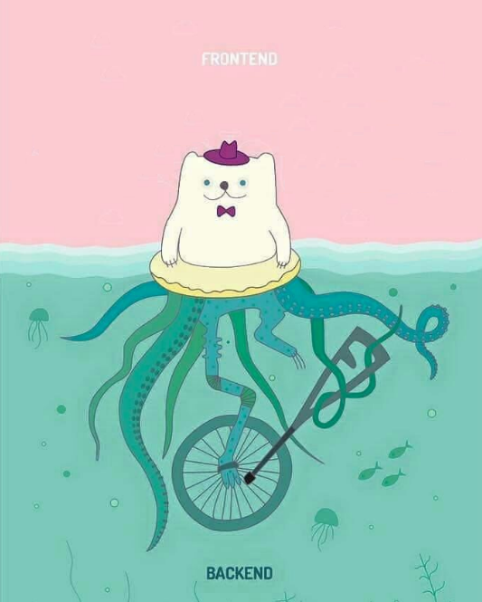
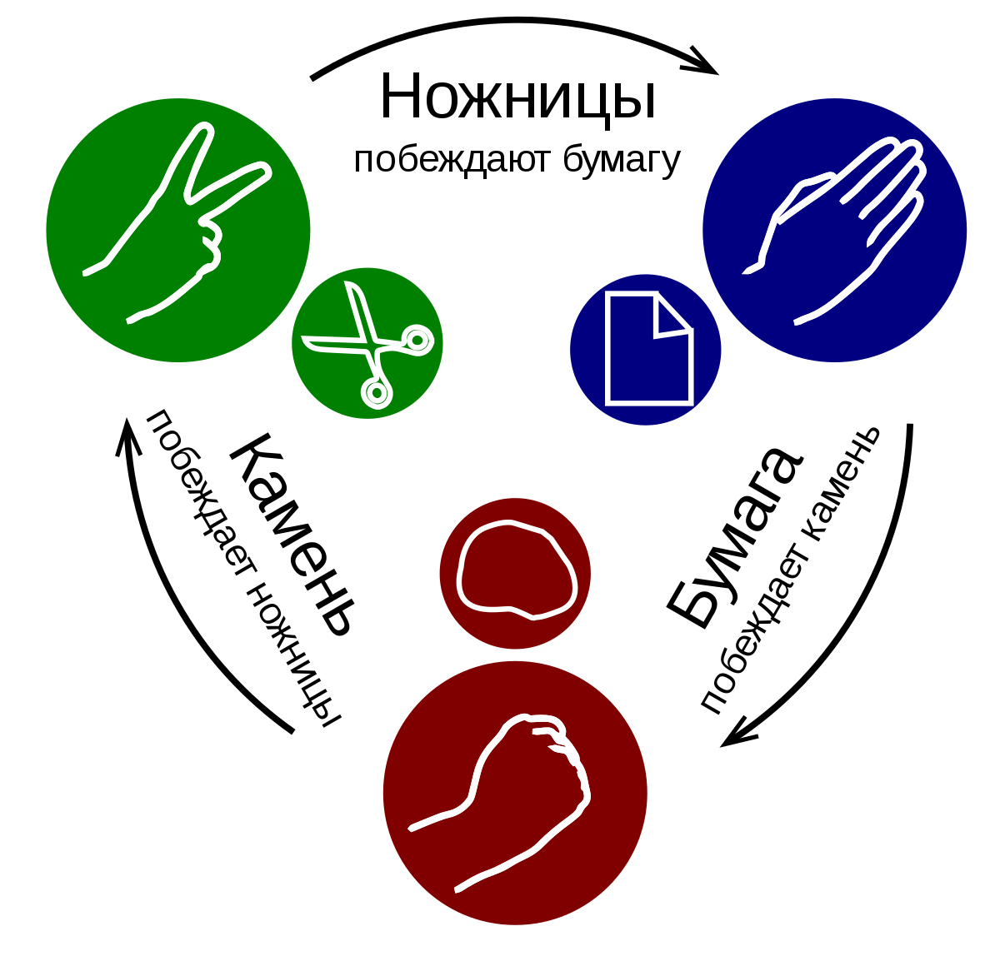

<!doctype html>
<html>
<head>
    <meta charset="utf-8">
    <meta name="viewport" content="width=device-width, initial-scale=1.0, maximum-scale=1.0, user-scalable=no">
    <link rel="stylesheet" href="reveal/css/reveal.css">
    <link rel="stylesheet" href="reveal/css/theme/kontur-light.css" id="theme">
    <!-- Theme used for syntax highlighting of code -->
    <link rel="stylesheet" href="reveal/css/highlight/idea-for-light.css">
    <link rel="stylesheet" href="reveal/css/highlight/darkula-for-dark.css">
    <!--[if lt IE 9]>
    <script src="reveal/js/html5shiv.js"></script>
    <![endif]-->
    <script defer src="reveal/js/head.min.js"></script>
    <script defer src="reveal/js/reveal.js"></script>
    <script defer src="reveal/initialize.js"></script>
    <script defer src="reveal/js/d3.min.js"></script>

    <style>
        .slides .center {
	          text-align: center;
        }

        .slides .right {
	          text-align: right;
        }
    </style>

    <title>Web API</title>
</head>
<body>

<div class="reveal"><div class="slides">

<section data-markdown><script type="text/template">

# Web API

<p class="center"><a href="https://github.com/kontur-web-courses/web-api">https://github.com/kontur-web-courses/<b>web-api</b></a></p>

</script></section>


<section data-markdown><script type="text/template">

## Про хорошие API

***

### Зачем создавать API?

***

### Бэкенд для SPA

<p></p>

*Только ли?*

***

### Потребности в API

- Одинаковые возможности в разных типах приложений
  *Web, Mobile, Desktop*
- Переиспользование API в продуктах компании
  *Сервис аутентификации, биллинг, сервис адресов*
- API для внешних заказчиков
  *Интеграции с банками*
- Автоматизация с помощью ботов
  *Боты для трейдинга, группы ulearn*

***

### А какое API хорошее?

***

### Особенности хорошего API

1. Его **легко изучать**!
  - Устроено стандартным, предсказуемым образом
  - Понятно сообщает об ошибках
  - Гранулярно: разбито на небольшие переиспользуемые кусочки
  - Подсказывает доступную функциональность
  - Документировано
2. Ему **можно доверять**!
  - Стабильное, хотя допустимо расширение возможностей
  - Версионирование при несовместимых изменениях

***

### Наша цель — понятное API

</script></section>


<section data-markdown><script type="text/template">

## HTTP API

***

### Получение данных

Запрос
```http
GET /documents/19?page=20&notes=1 HTTP/1.1
Host: example.com
Accept: text/html
```

Ответ
```http
HTTP/1.1 200 OK
Content-Type: text/html; charset=utf-8
Content-Length: 1234

<!-- ДОКУМЕНТ -->
```

***

### Отправка данных

Запрос
```http
POST /messagebox HTTP/1.1
Host: example.com
Accept: application/json, application/xml
X-Session: 5CA17001-04C5-4BA8-A05B-0F08FA9E4465
Content-Type: application/json
Content-Length: 456

{"msg":"Hi, people!","from": ... }
```

Ответ
```http
HTTP/1.1 204 No Content
```

***

### Способы передачи данных в HTTP
- Method: `GET`, `POST`
- Path: `/documents/19`, `/messagebox`
- Query string: `page=20&notes=1`
- Headers: `X-Session`
- Body: `{"msg":"Hi, people!","from": ... }`

**Что и для чего использовать в API?**

***

### Рассмотрим API для конкретной задачи

Я хочу записаться на прием к врачу.
От веб службы мне нужно получить свободные часы приема на конкретную дату и после записаться на прием.


***

### Вся инфомация в теле запроса

```http
POST /appointmentService HTTP/1.1
[various other headers]

<openSlotRequest date = "2010-01-04" doctor = "mjones"/>
```

```http
HTTP/1.1 200 OK
[various headers]

<openSlotList>
  <slot start = "1400" end = "1450">
    <doctor id = "mjones"/>
  </slot>
  <slot start = "1600" end = "1650">
    <doctor id = "mjones"/>
  </slot>
</openSlotList>
```

***

### Уровень 0. The Swamp of POX

- Все методы собраны в кучу
- Сложно понять, какие есть сущности
- Сложно понять, какие доступны действия

*POX* — Plain Old Xml

*XML-RPC* — стандарт API, соответствующий уровню 0

***

### Как сделать HTTP API лучше?

***

### Сделаем разные пути у сущностей

```http
POST /doctors/mjones HTTP/1.1
[various other headers]

<openSlotRequest date = "2010-01-04"/>
```

```http
HTTP/1.1 200 OK
[various headers]

<openSlotList>
  <slot id = "1234" doctor = "mjones" start = "1400" end = "1450"/>
  <slot id = "5678" doctor = "mjones" start = "1600" end = "1650"/>
</openSlotList>
```

***

```http
POST /slots/1234 HTTP/1.1
[various other headers]

<appointmentRequest>
  <patient id = "jsmith"/>
</appointmentRequest>
```

```http
HTTP/1.1 200 OK
[various headers]

<appointment>
  <slot id = "1234" doctor = "mjones" start = "1400" end = "1450"/>
  <patient id = "jsmith"/>
</appointment>
```

***

### Уровень 1. Resourses

- Иерархия сущностей представлена путями в URI
- Поэтому к каждой сущности можно обращаться отдельно,
  а значит каждая сущность — независимый ресурс
- API разделяется на части, сложность каждой части уменьшается

***

### Представления ресурсов

Ресурс может быть представлен в разных видах: JSON, XML,
Excel, XHTML и т.д.

Говорят, у **одного ресурса есть несколько представлений**

Необходимое представление можно запросить через
`Content Negotiation`

***

### Content Negotiation

В запросе должен быть заголовок `Accept`
```http
GET /documents/19?page=20&notes=1 HTTP/1.1
Accept: application/json, application/xml
```

Сервер попытается ответить запрошенным представлением ресурса
```http
HTTP/1.1 200 OK
Content-Type: application/json
Content-Length: 1234
```

[Подробнее](https://developer.mozilla.org/ru/docs/Web/HTTP/Content_negotiation)

***

### Media Types

```txt
text/plain
text/html
text/css

application/json
application/xml

image/gif
image/svg+xml

application/xhtml+xml
application/vnd.ms-excel
application/vnd.mozilla.xul+xml
```

vnd. — префикс для типов от компаний
+xml — передается посредством XML

***

### Как сделать HTTP API лучше?

***

### Используем Methods

```http
GET /doctors/mjones/slots?date=20100104&status=open HTTP/1.1
[various headers]
```

```http
HTTP/1.1 200 OK
[various headers]

<openSlotList>
  <slot id = "1234" doctor = "mjones" start = "1400" end = "1450"/>
  <slot id = "5678" doctor = "mjones" start = "1600" end = "1650"/>
</openSlotList>
```

Используется GET для неизменяющего запроса

***

### Используем Status codes

```http
POST /slots/1234 HTTP/1.1
[various other headers]

<appointmentRequest>
  <patient id = "jsmith"/>
</appointmentRequest>
```

```http
HTTP/1.1 201 Created
Location: slots/1234/appointment
[various headers]

<appointment>
  <slot id = "1234" doctor = "mjones" start = "1400" end = "1450"/>
  <patient id = "jsmith"/>
</appointment>
```

Location содержит путь до созданного ресурса

***

```http
POST /slots/1234 HTTP/1.1
[various other headers]

<appointmentRequest>
  <patient id = "jsmith"/>
</appointmentRequest>
```

```https
HTTP/1.1 409 Conflict
[various headers]

<openSlotList>
  <slot id = "5678" doctor = "mjones" start = "1600" end = "1650"/>
</openSlotList>
```

Тело содержит свободный слот

***

### Уровень 2. HTTP Verbs

- Стандартные методы и коды ошибок уменьшяют вариативность, уменьшая сложность API
- Ответы содержат информацию о возможных действиях

***

### Какие бывают действия

**Methods**: `GET`, `POST`, `DELETE`, `PUT`, `PATCH`, `HEAD`, `OPTIONS`

**Безопасные** действия: не вносят изменений

**Идемпотентные** действия: повторый вызов не меняет результат

***

### Таблица действий

| Method   	| Действие                     	| Безоп. 	| Идемпот. 	|
|---------	|------------------------------	|--------	|----------	|
| GET     	| Получение ресурса            	|        	|          	|
| POST    	| Добавление ресурса           	|        	|          	|
| DELETE  	| Удаление ресурса             	|        	|          	|
| PUT     	| Полное обновление ресурса    	|        	|          	|
| PATCH   	| Частичное обновление ресурса 	|        	|          	|
| HEAD    	| Метаинформация о ресурсе     	|        	|          	|
| OPTIONS 	| Возможные действия           	|        	|          	|

*Какие безопасные?*

***

### Таблица действий

| Method   	| Действие                     	| Безоп. 	| Идемпот. 	|
|---------	|------------------------------	|--------	|----------	|
| GET     	| Получение ресурса            	| Да     	|          	|
| POST    	| Добавление ресурса           	| Нет    	|          	|
| DELETE  	| Удаление ресурса             	| Нет    	|          	|
| PUT     	| Полное обновление ресурса    	| Нет    	|          	|
| PATCH   	| Частичное обновление ресурса 	| Нет    	|          	|
| HEAD    	| Метаинформация о ресурсе     	| Да     	|          	|
| OPTIONS 	| Возможные действия           	| Да     	|          	|

*Какие идемпотентные?*

***

### Таблица действий

| Method   	| Действие                     	| Безоп. 	| Идемпот. 	|
|---------	|------------------------------	|--------	|----------	|
| GET     	| Получение ресурса            	| **Да** 	| Да       	|
| POST    	| Добавление ресурса           	| Нет    	| **Нет**  	|
| DELETE  	| Удаление ресурса             	| Нет    	| **Да**   	|
| PUT     	| Полное обновление ресурса    	| Нет    	| **Да**   	|
| PATCH   	| Частичное обновление ресурса 	| Нет    	| **Нет**  	|
| HEAD    	| Метаинформация о ресурсе     	| **Да** 	| Да       	|
| OPTIONS 	| Возможные действия           	| **Да** 	| Да       	|

***

### Коды ответов для API

1xx: Informational
2xx: **Successful** - возвращаются в случае успеха
3xx: Redirection
4xx: **Client Error** - возвращаются при ошибках
5xx: Server Error

***

| Код  	| Фраза                	| Применение                                                            	|
|------	|----------------------	|-----------------------------------------------------------------------	|
| 200  	| OK                   	| Запрос выполнен, ответ с содержимым                                   	|
| 201  	| Created              	| Ресурс создан, ответ обычно содержит ссылки на созданный ресурс       	|
| 204  	| No&nbsp;Content      	| Запрос выполнен, ответ без содержимого                                	|

***

| Код  	| Фраза                       	| Применение                                                            	|
|------	|-----------------------------	|-----------------------------------------------------------------------	|
| 400  	| Bad&nbsp;Request            	| Ошибка в запросе клиента                                              	|
| 404  	| Not&nbsp;Found              	| Ресурс не найден                                                      	|
| 405  	| Method&nbsp;Not&nbsp;Allowed 	| Метод не доступен, должны возвращаться доступные методы               	|
| 406  	| Not&nbsp;Acceptable         	| Ресурс не может быть представлен в запрошенном виде                   	|
| 409  	| Conflict                    	| Конфликт с текущем состоянием ресурса, часто из-за обновления         	|
| 422  	| Unprocessable&nbsp;Entity   	| Не пройдены логические проверки                                       	|

***

### Как сделать HTTP API лучше?

***

### Добавим ссылки на возможные действия

```http
GET /doctors/mjones/slots?date=20100104&status=open HTTP/1.1
[various headers]
```

```http
HTTP/1.1 200 OK
[various headers]

<openSlotList>
  <slot id = "1234" doctor = "mjones" start = "1400" end = "1450">
     <link rel = "/linkrels/slot/book" 
           uri = "/slots/1234"/>
  </slot>
  <slot id = "5678" doctor = "mjones" start = "1600" end = "1650">
     <link rel = "/linkrels/slot/book" 
           uri = "/slots/5678"/>
  </slot>
</openSlotList>
```

***

```http
POST /slots/1234 HTTP/1.1
[various other headers]

<appointmentRequest>
  <patient id = "jsmith"/>
</appointmentRequest>
```

```http
HTTP/1.1 201 Created
Location: http://royalhope.nhs.uk/slots/1234/appointment
[various headers]

<appointment>
  <slot id = "1234" doctor = "mjones" start = "1400" end = "1450"/>
  <patient id = "jsmith"/>
  <link rel = "/linkrels/appointment/cancel"
        uri = "/slots/1234/appointment"/>
  <link rel = "self"
        uri = "/slots/1234/appointment"/>
  <link rel = "/linkrels/appointment/changeTime"
        uri = "/doctors/mjones/slots?date=20100104&status=open"/>
</appointment>
```

***

### Уровень 3. Hypermedia Controls

- В телах ответов содержатся ссылки на возможные действия, упрощая исследование API
- API становится похоже на конечный автомат, где после каждого запроса доступно некоторое количество переходов

***

### Следующий уровень API =D

<p></p>

***

### Richardson Maturity Model

Классифицирует HTTP API

- Уровень 0. The Swamp of POX
- Уровень 1. Resourses
- Уровень 2. HTTP Verbs
- Уровень 3. Hypermedia Controls

[Подробнее](https://martinfowler.com/articles/richardsonMaturityModel.html)

***

### HTTP Verbs — гигиенический минимум

</script></section>


<section data-markdown><script type="text/template">

## Инструменты разработки API

***

### Создание Web API для .NET Core

```bash
dotnet new webapi -n ValuesApi
```

***

### Program.cs
```cs
public class Program
{
    public static void Main(string[] args)
    {
        CreateWebHostBuilder(args).Build().Run();
    }

    public static IWebHostBuilder CreateWebHostBuilder(string[] args) =>
        WebHost.CreateDefaultBuilder(args)
            .UseStartup<Startup>();
}
```

***

### Startup.cs
```cs
public class Startup
{
    // Use this method to add services to the container.
    public void ConfigureServices(IServiceCollection services)
    {
        services.AddMvc().SetCompatibilityVersion(...);
    }

    // Use this method to configure the HTTP request pipeline.
    public void Configure(IApplicationBuilder app, IHostingEnvironment env)
    {
        app.UseHttpsRedirection();
        app.UseMvc();
    }
}
```

***

### ValuesController.cs

```cs
[Route("api/[controller]")]
[ApiController]
public class ValuesController : ControllerBase
{
  [HttpGet] // GET api/values
  public ActionResult<IEnumerable<string>> Get() => new[] {"value1", "value2"};

  [HttpGet("{id}")] // GET api/values/5
  public ActionResult<string> Get(int id) => "value";

  [HttpPost] // POST api/values
  public void Post([FromBody] string value) { }
}
```

***

### Атрибуты MVC

**Управление путями**
`[Route("api/[controller]")]`, `[HttpGet("{id}")]`

**Управление методами**
`[HttpGet]`, `[HttpPost]`, `[HttpDelete]`
`[HttpPut]`, `[HttpPatch]`,
`[HttpHead]`, `[HttpOptions]`,

**Управление источником данных**
`[FromHeader]`, `[FromQuery]`, `[FromRoute]`,
`[FromForm]`, `[FromBody]`, можно дописать свои

***

### Запуск Web API

```bash
dotnet run -p ValuesApi
```

https://localhost:5001/api/values
http://localhost:5000/api/values

***

### Демо Postman

1. Import / Import File
   Из `/WebApi/Samples/ValuesApi.postman_collection.json`
2. File / Settings / General / SSL certificate verification
   *Установить в OFF*
3. Collections / ValuesApi / Выбрать ... / Edit / Variables / baseUrl
   *Записать адрес, где развернуто приложение*
4. Collections / ValuesApi / Открыть любой запрос
   *Запустить*: увидеть статус код, тело, результаты тестов
   *Найти*: Params, Headers, Body, Pre-request Script, Tests
5. Runner / Collection Runner / ValuesApi / Run ValuesApi
   *Посмотреть результат прохождения тестов*
6. Console
   *Показать, что можно смотреть информацию по запросам*

***

### Postman — UI для бэкендера


</script></section>


<section data-markdown><script type="text/template">

## Коллекция ресурсов

***

### Ресурсы, а не функции

Большинство действий можно рассматривать
как создание и изменение ресурсов

Вместо
`POST /reserveBook?bookId=5`
Использовать
`PUT /books/5/reservation`

В результате:
- API делится на кусочки
- Действия сводятся к CRUD над ресурсами,
  представимыми методами HTTP
- Легко понять API, зная его  URI и HTTP-методы

***

### Тренировка. Что делают вызовы API?

<span class="fragment">`GET /users/5`</span>
<span class="fragment">`POST /users`</span>
<span class="fragment">`DELETE /users/6`</span>
<span class="fragment">`PUT /users/2`</span>
<span class="fragment">`PUT /users/100500`</span>
<span class="fragment">`PATCH /users/3`</span>
<span class="fragment">`GET /users`</span>
<span class="fragment">`GET /users?pageNumber=5&pageSize=100`</span>
<span class="fragment">`OPTIONS /users`</span>
<span class="fragment">`OPTIONS /users/6`</span>
<span class="fragment">`HEAD /users/5`</span>

***

### Нюанс. Именование коллекции

<span class="fragment">Как правильно `PUT /users/4` или `PUT /user/4`?</span>
<ul><li class="fragment">Верны оба варианта. Но важно, чтобы везде в API был один стиль
  Так как в любом случае `GET /users`,
  то `PUT /users/4` более единообразен</li></ul>

***

### Нюанс. Запросы-функции

<span class="fragment">
  Можно ли использовать функции или только ресурсы?
  Например, `POST /books/5/reserve`
</span>
<ul><li class="fragment">Можно, если выражение идеи через ресурсы
  сделает API менее понятным</li></ul>

<span class="fragment">
  Какой код ответа в случае успеха?
</span>
<ul><li class="fragment">Часто `200 OK` или `204 No Content`,
  потому что выполняется функция, а не создается ресурс</li></ul>
<ul><li class="fragment">В случае `200 OK` возвращается релевантная запросу информация</li></ul>

***

### Паттерн Repository

```cs
interface IUserRepository
{
    UserEntity Insert(UserEntity user);
    UserEntity FindById(Guid id);
    UserEntity GetOrCreateByLogin(string login);
    void Update(UserEntity user);
    UserEntity UpdateOrInsert(UserEntity user);
    void Delete(Guid id);
}
```

- Позволяет скрыть особенности хранения данных за абстракцией
- Можно разрабатывать и тестировать API отдельно от БД
- Каждому тип сущностей — отдельный репозиторий
- Содержит все нужные и допустимые методы

***

### Data Transfer Object

**Простой объект для передачи данных**,
не содержит методов и логики

Если API принимает или возвращает объекты
в виде XML, JSON или других форматах, то это DTO

**Полезно создавать отдельные DTO** для каждого метода API,
потому что набор полей или правил проверки
отличается от метода к методу

***

### Именование DTO

**Примеры названий для GET**
- UserDto
- UserToGetDto, UserToGet

**Примеры названий для POST**
- UserForCreationDto, UserForCreation
- UserToCreateDto, UserToCreate
- UserToPostDto, UserToPost

И многие другие варианты...

***

### Задача UsersApi

</script></section>


<section data-markdown><script type="text/template">

## Документация API

***

### Проблема

Чтобы использовать API, надо его узнать!

<div class="fragment">Значит кто-то должен описать.</div>

<div class="fragment">
Если API описывает аналитик/разработчик:
<ul><li>Ошибки и неточности<li>Сложно описать все<li>Нестандартно, как получится</ul>
</div>

***

### Стандарт описания API — решение

**Swagger 2.0** или **OpenApi 3.0** от SmartBear

Можно описывать API на yaml или json

***

### Демо Swagger

Для использования Swagger в .NET есть библиотека **Swashbuckle**

Чтобы воспользоваться, надо подключить к `Startup.cs`
методы из `/WebApi/Samples/SwaggerExtensions.cs`

В результате:
- Появится визуализация API при старте WebApi
- UI можно использовать для отправки запросов
- Реальное описание доступно по адресу в виде JSON
`/swagger/web-api/swagger.json`
- `swagger.json` можно редактировать в https://editor.swagger.io
- Содержимое `swagger.json` можно импортировать в Postman

***

<h3 class="center">Даже автосгенерированный Swagger значительно облегчает жизнь фронтендеру!</h3>

***

### Дополнительные источники документации

- Аннотации из ASP.NET Core
- Xml Documentation Comments
- Swashbuckle Annotations

***

### Аннотации из ASP.NET Core

```cs
[HttpGet("{userId}")]
[Produces("application/json", "application/xml")]
ActionResult<UserDto> GetUserById([FromRoute] Guid userId) { /*...*/ }
```

***

### Xml Documentation Comments

```cs
/// <summary>
/// Получить пользователя
/// </summary>
/// <param name="userId">Идентификатор пользователя</param>
ActionResult<UserDto> GetUserById([FromRoute] Guid userId) { /*...*/ }
```

***

### Swashbuckle Annotations

```cs
[SwaggerResponse(200, "OK", typeof(UserDto))]
[SwaggerResponse(404, "Пользователь не найден")]
ActionResult<UserDto> GetUserById([FromRoute] Guid userId) { /*...*/ }
```

***

### Описание без Swashbuckle Annotations

```cs
/// <summary>
/// Получить пользователей
/// </summary>
/// <param name="pageNumber">Номер страницы, по умолчанию 1</param>
/// <param name="pageSize">Размер страницы, по умолчанию 20</param>
/// <response code="200">OK</response>
[HttpGet(Name = nameof(GetUsers))]
[Produces("application/json", "application/xml")]
[ProducesResponseType(typeof(IEnumerable<UserDto>), 200)]
IActionResult GetUsers(int pageNumber, int pageSize) { /*...*/ }
```

**Приходится описывать code у response в двух местах :(**

***

### Описание Media Type для PATCH

```cs
[HttpPatch("{userId}")]
[Consumes("application/json-patch+json")]
[Produces("application/json", "application/xml")]
IActionResult PartiallyUpdateUser([FromRoute] Guid userId,
    [FromBody] JsonPatchDocument<object> patchDoc) { /*...*/ }
```

***

### Демо Описания для Swagger

Скопировать в `UsersController` описания из
`/WebApi/Samples/ISwaggerDescriptionsForUsersController.cs`

***

### Результат использования Swagger

- **Автогенерация описания** по коду сервера
- Стандартная и понятная **визуализация API**
- **Песочница**, чтобы делать запросы: встроенная и Postman
- **Автогенерация клиентов и серверов** по описанию

</script></section>


<section data-markdown><script type="text/template">

## REST

***

### Representational State Transfer

**REST** дает представление о том, как ведет себя
хорошо спроектированное веб-приложение:
- Сеть веб-страниц (*виртуальный конечный автомат*),
- где пользователь взаимодействует с приложением,
  выбирая ссылки (*переходы между состояниями*)
- в результате чего следующая страница передается пользователю
  (*следующее состояние приложения*)

Состояние клиента = запрошенный URI + полученный ответ

***

### Ограничения REST
1. **Client-Server**: клиент и сервер разделены, развиваются отдельно
2. **Statelessness**: сервер не хранит информации о клиентах,
запрос содержит всю необходимую информацию для обработки,
в том числе информацию для идентификации клиента
3. **Cacheable**: в ответе явно говорится можно ли его кэшировать
4. **Uniform Interface**: API и потребители разделяют
   один технический интерфейс (e.g. URI, Method, Media Type)
5. **Layered System**: допускается разделение системы на слои,
но компоненты одного слоя могут взаимодействовать
только с компонентами последующего слоя
(e.g. прокси, PayPal построенный на VISA)
6. **Code on Demand** (опционально): сервер может расширять
   функциональность клиента (e.g. отправлять JavaScript)

***

### Подограничения Uniform Interface

- **Identification of resources**:
у каждого ресурса есть идентификатор,
не меняющийся при изменении состояния ресурса (e.g. URI)
- **Manipulation of resources through representations**:
ресурсы отделены от их представлений,
представления + метаданных должно быть достаточно,
чтобы модифицировать или удалить ресурс
- **Self-descriptive message**:
каждое сообщение должно включать достаточно информации, чтобы описать как обработать сообщение (e.g. Content-Type)
- **Hypermedia As The Engine Of Application State (HATEOAS)**:
гипермедия расширяет понятие гиперссылок,
ссылки используются для навигации по API

***

### Преимущества REST

- **Надежность**: не приходится сохранять информацию
о состоянии клиента, которая может быть утеряна
- **Производительность**: за счет использования кэша
- **Масштабируемость**: за счет унифицированного интерфейса
и использования слоев

***

### Замечения по REST

Предложил **Рой Филдинг** в докторской диссертации **в 2000 году**
*Идеи REST уже повсеместно применяются и не удивляют*

REST - это **архитектурный стиль**, а не протокол
*Не требует использование HTTP-методов и вообще HTTP*
*API по протоколу XML-RPC может быть RESTful*
*API уровня Hypermedia Controls из RMM — скорее всего RESTful API*

</script></section>


<section data-markdown><script type="text/template">

## Практика проектирования API

***

### Игра Камень-Ножницы-Бумага

<p></p>

- 2 игрока
- Несколько туров

*Нужно придумать HTTP API, чтобы играть через интернет*

***

### Сценарии

**Уже реализовано:**
- Зарегистрировать нового пользователя
- Отредактировать / удалить пользователя

**Надо продумать:**
- Создать игру для некоторого пользователя
- Присоединиться к игре некоторым пользователем
- Начать игру
- Сделать пользователем ход в игре
- Показать текущую информацию по игре
- Выйти из игры

***

### Ресурсы

- **Игра** `GameDto.cs`:
  игроки, статус, номер тура, количество туров
- **Игрок** `PlayerDto.cs`:
  логин, решение в туре, счет в игре
- **Пользователь** `UserDto.cs`:
  логин, имя, статистика, текущая игра

***

### Примеры кода

- Проект **Game** – реализация предметной области игры
- Проект **ConsoleApp** – реализация логики игры в виде консольного приложения

***

### Задача GameApi

***

### Демо решения задачи GameApi

API с реализацией в ветке `solved`

Поиграться можно через коллекцию Postman:
`/WebApi/Samples/GameApi.postman_collection.json`

***

### Разбор задачи GameApi

- Игра может начинаться сама при вступлении второго игрока
- Удобно, когда методы возвращают новое состояние ресурса
- Методы вида `/users/{userId}/game/decide`
  оформляются с HTTP-методом POST
- Размещать методы корректно
  и в `/games/{gameId}`, и в `/users/{userId}/game`

</script></section>


<section data-markdown><script type="text/template">


## Вопросы?


</script></section>


</div></div>
</body>
</html>
